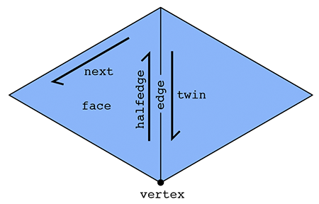

Overview
This document describes the internal data structures and algorithms that comprise the Scotty3D codebase, focusing mainly on core functionality (e.g., meshing and ray tracing). Limited documentation of the graphical user interface (GUI) is available via comments in the source itself (though this information is not needed for assignments).
Geometric Data Structures
Scotty3D uses a variety of geometric data structures, depending on the task. Some operations (e.g., ray tracing) use a simple list of triangles that can be compactly encoded and efficiently cached. For more sophisticated geometric tasks like mesh editing and sampling, a simple triangle list is no longer sufficient (or leads to unnecessarily poor asymptotic performance). Most actions in MeshEdit mode therefore use a topological data structure called a halfedge mesh (also known as a _doubly-connected edge list), which provides a good tradeoff between simplicity and sophistication.
The Halfedge Data Structure
The basic idea behind the halfedge data structure is that, in addition to the usual vertices, edges, and faces that make up a polygonal mesh, we also have an entity called a halfedge that acts like "glue" connecting the different elements. It is this glue that allow us to easily "navigate" the mesh, i.e., easily access mesh elements adjacent to a given element.

In particular, there are two halfedges associated with each edge (see picture above). For an edge connecting two vertices i and j, one of its halfedges points from i to j; the other one points from j to i. In other words, we say that the two halfedges are oppositely oriented. On of the halfedges is associated with the face to the "left" of the edge; the other is associated with the face to the "right." Each halfedge knows about the opposite halfedge, which we call its twin. It also knows about the next halfedge around its face, as well as its associated edge, face, and vertex.
In contrast, the standard mesh elements (vertices, edges, and faces) know only about one of their halfedges. In particular:
- a vertex knows about one of its "outgoing" halfedges,
- an edge knows about one of its two halfedges, and
- a face knows about one of the many halfedges circulating around its interior.
In summary, we have the following relationships:
| Mesh element | Pointers |
|---|---|
| Vertex | one halfedge |
| Edge | one halfedge |
| Face | one halfedge |
| Halfedge | twin, next, vertex, edge, face |
This list emphasizes that it is really the halfedges that connect everything up. An easy example is if we want to visit all the vertices of a given face. We can start at the face's halfedge, and follow the "next" pointer until we're back at the beginning. A more interesting example is visiting all the vertices adjacent to a given vertex v. We can start by getting its outgoing halfedge, then its twin, then its next halfedge; this final halfedge will also point out of vertex v, but it will point toward a different vertex than the first halfedge. By repeating this process, we can visit all the neighboring vertices:
In some sense, a halfedge mesh is kind of like a linked list on
steroids. For instance, the halfedges around a given face (connected by next pointers) form a sort of "cyclic" linked list, where the tail points back to the head.
A nice consequence of the halfedge representation is that any valid halfedge mesh must be manifold and orientable. Scotty3D will therefore only produce manifold, oriented meshes as output (and will complain if the input does not satisfy these criteria).
The HalfedgeMesh Class
The Scotty3D skeleton code already provides a fairly sophisticated implementation of the half edge data structure, in the HalfedgeMesh class (see halfEdgeMesh.h and halfEdgeMesh.cpp).
Although the detailed implementation may appear a bit complicated, the
basic interface is not much different from the abstract description
given above. For instance, suppose we have a face f and want to print
out the positions of all its vertices. We would write a routine like
this:
void printVertexPositions(FaceCIter f) {
HalfEdgeCIter h = f->halfedge(); // get the first halfedge of the face
do {
VertexCIter v = h->vertex(); // get the vertex of the current halfedge
cout << v->position << endl; // print the vertex position
h = h->next(); // move to the next halfedge around the face
} while (h != f->halfedge()); // keep going until we're back at the beginning
}Notice that we refer to a face as a FaceCIter rather than just a Face. You can think of an Iter as a kind of pointer; the letter C indicates that this pointer is "constant", i.e., for this particular algorithm, we will not change the value pointed to by f. Note that members of an iterator are accessed with an arrow -> rather than a dot .,
just as with pointers. (A more in-depth explanation of some of these
details can be found in the inline documentation.) Similarly, to print
out the positions of all the neighbors of a given vertex we could write a
routine like this:
void printNeighborPositions(VertexCIter v) {
HalfEdgeCIter h = v->halfedge(); // get one of the outgoing halfedges of the vertex
do {
HalfEdgeCIter h_twin = h->twin(); // get the vertex of the current halfedge
VertexCIter v = h_twin->vertex(); // vertex is 'source' of the half edge.
// so h->vertex() is v,
// whereas h_twin->vertex() is the neighbor vertex.
cout << v->position << endl; // print the vertex position
h = h_twin->next(); // move to the next outgoing halfedge of the vertex.
} while(h != v->halfedge()); // keep going until we're back at the beginning
}To iterate over all the vertices in a halfedge mesh, we could write a loop like this:
for(VertexCIter v = mesh.verticesBegin(); v != mesh.verticesEnd(); v++) {
printNeighborPositions(v); // do something interesting here
}Internally, the lists of vertices, edges, faces, and halfedges are stored as linked lists, which allows us to easily add or delete elements to our mesh. For instance, to add a new vertex we can write
VertexIter v = mesh.newVertex();Likewise, to delete a vertex we can write
mesh.deleteVertex(v);Note, however, that one should be very, very careful when adding or deleting mesh elements. New mesh elements must be properly linked to the mesh -- for instance, this new vertex must be pointed to one of its associated halfedges by writing something like
v->halfedge() = h;Likewise, if we delete a mesh element, we must be certain that no existing elements still point to it; the halfedge data structure does not take care of these relationships for you automatically. In fact, that is exactly the point of this assignment: to get some practice directly manipulating the halfedge data structure. Being able to perform these low-level manipulations will enable you to write useful and interesting mesh code far beyond the basic operations in this assignment.
Finally, the boundary of the surface (e.g., the
ankles and waist of a pair of pants) requires special care in our
halfedge implementation. At first glance, it would seem that the routine
printNeighborPositions() above might break if the vertex v is on the boundary, because at some point we worry that we have no twin()
element to visit. Fortunately, our implementation has been designed to
avoid this kind of catastrophe. In particular, rather than having an
actual hole in the mesh, we create a "virtual" boundary face whose edges
are all the edges of the boundary loop. This way, we can iterate over
boundary elements just like any other mesh element. If we ever need to
check whether an element is on the boundary, we have the methods.
Vertex::isBoundary()
Edge::isBoundary()
Face::isBoundary()
Halfedge::isBoundary()These methods return true if and only if the element is contained in the domain boundary. Additionally, we store an explicit list of boundary faces, which we can iterate over like any other type of mesh element:
for(FaceCIter b = mesh.boundariesBegin(); b != mesh.boundariesEnd(); b++) {
// do something interesting with this boundary loop
}These virtual faces are not stored in the usual face list, i.e., they
will not show up when iterating over faces. The figure below should
help to further explain the behavior of HalfedgeMesh for surfaces with boundary:

Dark blue regions indicate interior faces, whereas light blue regions
indicate virtual boundary faces. A vertex, edge, or halfedge is
considered to be part of the boundary if it is contained entirely
in a boundary face. For instance, in the figure above the region b is a
virtual boundary face, which means that vertex v', edge e', and
halfedge h' are all part of the boundary; their isBoundary()
methods will return true. In contrast, vertex v, edge e, face f, and
halfedge h are not part of the boundary, and their isBoundary() methods
will return false. Notice also that the boundary face b is a polygon
with 12 edges.
Note: the edge degree and face degree of a boundary vertex is not the same! Notice, for instance, that vertex v' is contained in three edges but only two interior faces. By convention, Vertex::degree()
returns the face degree, not the edge degree. The edge degree can be
computed by finding the face degree, and adding 1 if the vertex is a
boundary vertex.
Please refer to the inline comments for further details about the HalfedgeMesh data structure.
Tutorial: Local Mesh Operations
Many of the actions that need to be implemented in the MeshEdit mode
are local mesh operations (like edge collapse, face bevel, etc.). Here
we provide a step-by-step guide to implementing a simplied version of
the EdgeFlip operation for a pair of triangles---the final version, however, must be implemented for general polygons (i.e., any -gon). The basic strategy for implementing the other local operations is quite similar to the procedure outlined below. Note: if you're not familiar with C++, you should definitely take a moment to learn about the standard library class std::vector, especially the method push_back(), which will make it easy to accumulate a list of pointers as you walk around a polygon, vertex, etc.
A good recipe for ensuring that all pointers are still valid after a local remeshing operation is:
- Draw a picture of all the elements (vertices, edges, faces, halfedges) that will be needed from the original mesh, and all the elements that should appear in the modified mesh.
- Allocate any new elements that are needed in the modified mesh, but do not appear in the original mesh.
- For every element in the "modified" picture, set all of its pointers -- even if they didn't change. For instance, for each halfedge, make sure to set
next,twin,vertex,edge, andfaceto the correct values in the new (modified) picture. For each vertex, make sure to set itshalfedgepointer. Etc. A convenience methodHalfedge::setNeighbors()has been created for this purpose. - Deallocate any elements that are no longer used in the modified mesh, which can be done by calling
HalfedgeMesh::deleteVertex(),HalfedgeMesh::deleteEdge(), etc.
The reason for setting all the pointers (and not just the ones that changed) is that it is very easy to miss a pointer, causing your code to crash. Once the code is working, you can remove these unnecessary assignments if you wish -- but remember that premature optimization is the root of all evil
We now consider the case of a triangle-triangle edge flip.
PHASE 0: Draw a Diagram
Suppose we have a pair of triangles (a,b,c) and (c,b,d). After flipping the edge (b,c), we should now have triangles (a,d,c) and (a,b,d). A good first step for implementing any local mesh operation is to draw a diagram that clearly labels all elements affected by the operation:

Here we have drawn a diagram of the region around the edge both before and after the edge operation (in this case, "flip"), labeling each type of element (halfedge, vertex, edge, and face) from zero to the number of elements. It is important to include every element affected by the operation, thinking very carefully about which elements will be affected. If elements are omitted during this phase, everything will break---even if the code written in the two phases is correct! In this example, for instance, we need to remember to include the halfedges "outside" the neighborhood, since their "twin" pointers will be affected.
PHASE I: Collect elements
Once you've drawn your diagram, simply collect all the elements from the "before" picture. Give them the same names as in your diagram, so that you can debug your code by comparing with the picture.
// HALFEDGES
HalfedgeIter h0 = e0->halfedge();
HalfedgeIter h1 = h0->next();
HalfedgeIter h2 = h1->next();
HalfedgeIter h3 = h0->twin();
HalfedgeIter h4 = h3->next();
HalfedgeIter h5 = h4->next();
HalfedgeIter h6 = h1->twin();
HalfedgeIter h7 = h2->twin();
HalfedgeIter h8 = h4->twin();
HalfedgeIter h9 = h5->twin();
// VERTICES
VertexIter v0 = h0->vertex();
VertexIter v1 = h3->vertex();
// ...you fill in the rest!...
// EDGES
e1 = h1->edge();
e2 = h2->edge();
// ...you fill in the rest!...
// FACES
f0 = h0->face();
// ...you fill in the rest!...PHASE II: Allocate new elements
If your edge operation requires new elements, now is the time to allocate them. For the edge flip, we don't need any new elements; but suppose that for some reason we needed a new vertex v4. At this point we would allocate the new vertex via
VertexIter v4 = mesh.newVertex();(The name used for this new vertex should correspond to the label you
give it in your "after" picture.) Likewise, new edges, halfedges, and
faces can be allocated via the methods mesh.newEdge(), mesh.newHalfedge(), and mesh.newFace().
PHASE III: Reassign Elements
Next, update the pointers for all the mesh elements that are affected by the edge operation. Be exhaustive! In other words, go ahead and specify every pointer for every element, even if it did not change. Once things are working correctly, you can always optimize by removing unnecessary assignments. But get it working correctly first! Correctness is more important than efficiency.
// HALFEDGES
h0->next() = h1;
h0->twin() = h3;
h0->vertex() = v3;
h0->edge() = e0;
h0->face() = f0;
h1->next() = h2;
h1->twin() = h7;
h1->vertex() = v2;
h1->edge() = e2;
h1->face() = f0;
// ...you fill in the rest!...
// ...and don't forget about the "outside" elements!...
h9->next() = h9->next(); // didn't change, but set it anyway!
h9->twin() = h4;
h9->vertex() = v1;
h9->edge() = e4;
h9->face() = h9->face(); // didn't change, but set it anyway!
// VERTICES
v0->halfedge() = h2;
v1->halfedge() = h5;
v2->halfedge() = h3;
v3->halfedge() = h0;
// EDGES
e0->halfedge() = h0; //...you fill in the rest!...
// FACES
f0->halfedge() = h0; //...you fill in the rest!...PHASE IV: Delete unused elements
If your edge operation eliminates elements, now is the best time to deallocate them: at this point, you can be sure that they are no longer needed. For instance, since we do not need the vertex allocated in PHASE II, we could write
mesh.deleteVertex( v4 );You should be careful that this mesh element is not referenced by any other element in the mesh. But if your "before" and "after" diagrams are correct, that should not be an issue!
Design considerations
The basic algorithm outlined above will handle most edge flips, but you should also think carefully about possible corner-cases. You should also think about other design issues, like "how much should this operation cost?" For instance, for this simple triangle-triangle edge flip it might be reasonable to:
- Ignore requests to flip boundary edges (i.e., just return immediately if either neighboring face is a boundary loop).
- Ignore requests to perform any edge flip that would make the surface non-manifold or otherwise invalidate the mesh.
- Not add or delete any elements. Since there are the same number of mesh elements before and after the flip, you should only need to reassign pointers.
- Perform only a constant amount of work -- the cost of flipping a single edge should not be proportional to the size of the mesh!
Formally proving that your code is correct in all cases is challenging, but at least try to think about what could go wrong in degenerate cases (e.g., vertices of low degree, or very small meshes like a tetrahedron). The biggest challenge in properly implementing this type of local operation is making sure that all the pointers still point to the right place in the modified mesh, and will likely be the cause of most of your crashes!
Beveling
Here we provide some additional detail about the bevel operations and their implementation in Scotty3D. Each bevel operation has two components:
- a method that modifies the connectivity of the mesh, creating new beveled elements, and
- a method the updates the geometry of the mesh, insetting and offseting the new vertices according to user input.
The methods that update the connectivity are HalfedgeMesh::bevelVertex, halfedgeMesh::bevelEdge, and HalfedgeMesh::bevelFace. The methods that update geometry are HalfedgeMesh::_bevel_vtx_reposition_with_dist, HalfedgeMesh::_bevel_edge_reposition_with_dist, and HalfedgeMesh::_bevel_fc_reposition_with_dist. The methods for updating connectivity can be implemented following the general strategy outlined in the tutorial above.
To update the geometry of a beveled element, you are provided with the following data:
orig- These are the original vertex positions of the mesh element, before any insetting or offseting is applied.hs- These are the halfedges "around" the element currently being beveled.inset- The amount by which the new face should be inset (i.e., "shrunk" or "expanded")shift(faces only) - The amount by which the new face should be offset in the normal direction.
More specifically, the array hs stores the following data:
- For a beveled vertex,
hsstores the halfedges pointing from the vertices of the new polygon to the neighbors of the original vertex. - For a beveled edge,
hsstores the halfedges pointing from the vertices of the new polygon to the neighbors of the original edge endpoints. - For a beveled face,
hsstores the halfedges pointing from the vertices of the new polygon to the vertices of the original polygon.
These relationships are illustrated by the following diagram:
The basic recipe for updating the vertex positions is then:
- Iterate over the list of halfedges (
hs) - Grab the vertex coordinates that are needed to compute the new, updated vertex coordinates (this could be a mix of values from
orig, or the membersVertex::position) - Compute the updated vertex positions using the current values of
inset(and possiblyshift) - Store the new vertex positions in
Vertex::positionfor the vertices of the new, beveled polygon only (i.e., the positions of any polygon "outside" the dark blue one in the figures above should not be updated)
The reason for storing hs and orig in an
array is that it makes it easy to access positions "to the left" and "to
the right" of a given vertex. For instance, suppose we want to figure
out the offset from the corner of a polygon. We might want to compute
some geometric quantity involving the three vertex positions orig[i-1], orig[i], and orig[i+1] (as well as inset), then set the new vertex position hs[i]->vertex()->position to this new value:
A useful trick here is modular arithmetic: since we really have a "loop" of vertices, we want to make sure that indexing the next element (+1) and the previous element (-1) properly "wraps around." This can be achieved via code like
// Get the number of vertices in the new polygon
int N = hs.size();
// Assuming we're looking at vertex i, compute the indices
// of the next and previous elements in the list using
// modular arithmetic---note that to get the previous index,
// we can't just subtract 1 because the mod operation in C++
// doesn't behave quite how you might expect for negative
// values!
int a = (i+N-1) % N;
int b = i;
int c = (i+1) % N;
// Get the actual 3D vertex coordinates at these vertices
Vector3D pa = orig[a];
Vector3D pb = orig[b];
Vector3D pc = orig[c];From here, you will need to compute new coordinates for vertex i, which can be accessed from hes[i]->vertex()->position.
As a "dummy" example (i.e., this is NOT what you should actually do!!)
this code will set the position of the new vertex to the average of the
vertices above:
hes[i].vertex()->position = ( pa + pb + pc ) / 3.; // replace with something that actually makes sense!The only question remaining is: where should you put the beveled vertex? We will leave this decision up to you. This question is one where you will have to think a little bit about what a good design would be. Questions to ask yourself:
- How do I compute a point that is inset from the original geometry?
- For faces, how do I shift the geometry in the normal direction? (You may wish to use the method
Face::normal()here.) - What should I do as the offset geometry starts to look degenerate, e.g., shrinks to a point, or goes outside some reasonable bounds?
- What should I do when the geometry is nonplanar?
- Etc.
The best way to get a feel for whether you have a good design is to try it out! Can you successfully and easily use this tool to edit your mesh? Or is it a total pain, producing bizarre results? You be the judge!
Interface with global mesh operations
To facilitate user interaction, as well as global mesh processing
operations (described below), local mesh operations should return the
following values when possible. If the specified values are not
available, you should think about a reasonable alternative value to
return. First and foremost, the program should not crash! So
for instance, you should not return a pointer to an element that was
deleted. Second, you should try as much as possible to return a value
related to the argument. For instance, if the user asks to flip an edge
e that cannot be flipped (e.g., a boundary edge), the most natural solution would be to simply return e. Likewise, if the user asks to erase an edge e that cannot be erased, a natural return value might be an adjacent (non-boundary) face. Etc.
HalfedgeMesh::flipEdge- should return the edge that was flippedHalfedgeMesh::splitEdge- should return the inserted vertexHalfedgeMesh::collapseEdge- should return the new vertex, corresponding to the collapsed edgeHalfedgeMesh::collapseFace- should return the new vertex, corresponding to the collapsed faceHalfedgeMesh::eraseVertex- should return the new face, corresponding to the faces originally containing the vertexHalfedgeMesh::eraseEdge- should return the new face, corresponding to the faces originally containing the edgeHalfedgeMesh::bevelVertex- should return the new face, corresponding to the beveled vertexHalfedgeMesh::bevelEdge- should return the new face, corresponding to the beveled edgeHalfedgeMesh::bevelFace- should return the new, inset face
Global Mesh Processing
In addition to local operations on mesh connectivity, Scotty3D provides several global remeshing operations (as outlined in the User Guide). Two different mechanisms are used to implement global operations:
- Repeated application of local operations. Some mesh operations are most easily expressed by applying local operations (edge flips, etc.) to a sequence of mesh elements until the target output is achieved. A good example is mesh simplification, which is a greedy algorithm that collapses one edge at a time (see further discussion below).
- Global replacement of the mesh. Other mesh operations are better expressed by temporarily storing new mesh elements in a simpler mesh data structure (e.g., an indexed list of faces) and completely re-building the halfedge data structure from this data. A good example is Catmull-Clark subdivision, where every polygon must be simultaneously split into quadrilaterals (see further discussion below).
Note that in general there are no inter-dependencies among global
remeshing operations (except that some of them require a triangle mesh
as input, which can be achieved via the method HalfedgeMesh::triangulate).
As a sanity check, each of your resampling algorithms should complete
almost instantaneously (no more than a second or so) on meshes of a few
hundred polygons. If performance is significantly worse than this, you
may be repeatedly iterating over more elements than you really need to,
or allocating/deallocating more memory than necessary. A useful
debugging technique is to print out (or otherwise keep track of, e.g.,
via an integer counter or a profiler) the number of times basic methods
like Halfedge::next() or HalfedgeMesh::newVertex()
are called during a single execution of one of your methods; for most
methods this number should be some reasonably small constant (no more
than, say, 1000!) times the number of elements in the mesh.
Triangulation
A variety of geometry processing algorithms become easier to
implement (or are only well defined) when the input consists purely of
triangles. The method HalfedgeMesh::triangulate converts
any polygon mesh into a triangle mesh by splitting each polygon into
triangles. This transformation is performed in-place, i.e., the
original mesh data is replaced with the new, triangulated data (rather
than making a copy). The triangulate method is basically just a wrapper around HalfedgeMesh::splitPolygon, which splits a single face f
into triangles. The implementation of this method will look much like
the implementation of the local mesh operations (see the tutorial
above).
There is more than one way to split a polygon into triangles. Two common patterns are to connect every vertex to a single vertex, or to "zig-zag" the triangulation across the polygon:
The splitPolygon routine is not required to produce any particular triangulation so long as:
- all polygons in the output are triangles,
- the vertex positions remain unchanged, and
- the output is a valid, manifold halfedge mesh.
Note that triangulation of nonconvex or nonplanar polygons may lead to geometry that is unattractive or difficult to interpret. However, the purpose of this method is simply to produce triangular connectivity for a given polygon mesh, and correct halfedge connectivity is the only invariant that must be preserved by the implementation. The geometric quality of the triangulation can later be improved by running other global algorithms (e.g., isotropic remeshing); ambitious developers may also wish to consult the following reference:
Subdivision
In image processing, we often have a low resolution image that we want to display at a higher resolution. Since we only have a few samples of the original signal, we need to somehow interpolate or upsample the image. One idea would be to simply cut each pixel into four, leaving the color values unchanged, but this leads to a blocky appearance. Instead we might try a more sophisticated scheme (like bilinear or trilinear interpolation) that yields a smoother appearance.
In geometry processing, one encounters the same situation: we may have a low-resolution polygon mesh that we wish to upsample for display, simulation, etc. Simply splitting each polygon into smaller pieces doesn't help, because it does nothing to alleviate blocky silhouettes or chunky features. Instead, we need an upsampling scheme that nicely interpolates or approximates the original data. Polygon meshes are quite a bit trickier than images, however, since our sample points are generally at irregular locations, i.e., they are no longer found at regular intervals on a grid.
Three subdivision schemes are supported by Scotty3D: Linear, Catmull-Clark, and Loop. The first two can be used on any polygon mesh, and should be implemented via the global replacement strategy described above. Loop subdivision can be implemented using repeated application of local oeprations. See further details below.
Linear subdivision
Although our ultimate goal is to produce a smooth approximation of the control cage, the first step is to simply update the connectivity (but not the vertex positions) so that the mesh has a larger number of elements. This kind of basic splitting or "linear subdivision" is also useful for box modeling, when we simply want to increase the number of available control points.
Unlike most of the other global remeshing operations, linear (and Catmull-Clark) subdivision will proceed by completely replacing the original halfedge mesh with a new one. The high-level procedure is:
- Generate a list of vertex positions for the new mesh.
- Generate a list of polygons for the new mesh, as a list of indices into the new vertex list (a la "polygon soup").
- Hand these two lists to the method
HalfedgeMesh::rebuild, which rebuilds the halfedge connectivity from scratch.
Given these lists, rebuild will take care of allocating halfedges, setting up next and twin
pointers, etc., based on the list of polygons generated in step
2---this routine is already implemented in the Scotty3D skeleton code.
Both linear and Catmull-Clark subdivision schemes will handle general -gons (i.e., polygons with sides) rather than, say, quads only or triangles only. Each -gon (including but not limited to quadrilaterals) will be split into quadrailaterals according to the following template:
The high-level procedure is outlined in greater detail in HalfedgeMesh::subdivideQuad.
Vertex positions
For global linear or Catmull-Clark subdivision, the strategy for assigning new vertex positions may at first appear a bit strange: in addition to updating positions at vertices, we will also calculate vertex positions associated with the edges and faces of the original mesh. Storing new vertex positions on edges and faces will make it extremely convenient to generate the polygons in our new mesh, since we can still use the halfedge data structure to decide which four positions get connected up to form a quadrilateral. In particular, each quad in the new mesh will consist of:
- one new vertex associated with a face from the original mesh,
- two new vertices associated with edges from the original mesh, and
- one vertex from the original mesh.
For linear subdivision, the rules for computing new vertex positions are very simple:
- New vertices at original faces are assigned the average coordinates of all corners of that face (i.e., the arithmetic mean).
- New vertices at original edges are assigned the average coordinates of the two edge endpoints.
- New vertices at original vertices are assigned the same coordinates as in the original mesh.
These values should be assigned to the members Face::newPosition, Edge::newPosition, and Vertex::newPosition, respectively. For instance, f->newPosition = Vector3D( x, y, z ); will assign the coordinates (x,y,z) to the new vertex associated with face f.
The general strategy for assigning these new positions is to iterate
over all vertices, then all edges, then all faces, assigning appropriate
values to newPosition. Note: you must copy the original vertex position Vertex::position to the new vertex position Vertex::newPosition; these values will not be used automatically.
This step should be implemented in the method HalfedgeMesh::computeLinearSubdivisionPositions in meshEdit.cpp.
Once the new vertex positions have been assigned to elements of the
halfedge mesh, they need to be accumulated into a single list of all vertex positions in the new mesh, which will be handed to HalfedgeMesh::rebuild. It is important that vertex coordinates in this list appear in the same order they were indexed!
For instance, if you index vertices, then edges, then faces, then the
final vertex coordinate list should likewise contain coordinates from
vertices, then coordinates from edges, then coordinates from faces.
These vertex coordinates can be accumuluated using an object of type vector<Vector3D>,
i.e., a dynamically-sized array of vertex positions. The basic
strategy is to loop over all vertices, then all edges, then all faces,
calling push_back to append each new vertex coordinate to the list. (See the next section for further discussion of the vector class.) Further details are provided in the in-line comments.
This last step should be implemented in the method HalfedgeMesh::buildSubdivisionVertexList in meshEdit.cpp.
Vertex indices
In addition to new (x,y,z) coordinates, we also need to assign a unique index to each vertex in the new mesh---including those that are associated with edges and faces. In other words, every vertex, edge, and face in the mesh will be assigned an integer between 0 and , where is the total number of vertices plus edges plus faces in the original mesh. A simple strategy for assigning these indices is:
- Initialize a counter to zero.
- Iterate over vertices, assigning the index of the current vertex to the counter value, and incrementing the counter.
- Iterate over edges, assigning the index of the current edge to the counter value, and incrementing the counter.
- Iterate over faces, assigning the index of the current face to the counter value, and incrementing the counter.
Note that the particular choice of indices does not matter---the only things you must guarantee are that (i) every mesh element is assigned a valid index, and (ii) no two mesh elements share the same index.
Polygons
Unlike the local operations described above, which are applied one element after another, in linear and Catmull-Clark subdivision all polygons are subdivided simultaneously. In other words, if we focus on the whole mesh (rather than a single polygon), then we are
- creating one new vertex for each edge,
- creating one new vertex for each face, and
- keeping all the vertices of the original mesh.
These vertices are then connected up to form quadrilaterals ( quadrilaterals for each -gon). Rather than directly modifying the halfedge connectivity, new quads will be collected in a much simpler mesh data structure: a list of polygons. Note that with this subdivision scheme, every polygon in the output mesh will be a quadrilateral, even if the input contains triangles, pentagons, etc.
In Scotty3D, a list of polygons can be declared as
vector< vector<Index> > quads;where vector is a class from the C++ standard template library, representing a dynamically-sized array. An Index is just another name for a size_t,
which is the standard C++ type for integers that specify an element of
an array. Polygons can be created by allocating a list of appropriate
size, then specifying the indices of each vertex in the polygon. For
example:
vector<Index> quad( 4 ); // allocate an array with four elements
// Build a quad with vertices specified by integers (a,b,c,d), starting at zero.
// These indices should correspond to the indices computing when assigning vertex
// positions, as described above.
quad[0] = a;
quad[1] = b;
quad[2] = c;
quad[3] = d;Once a quad has been created, it can be added to the list of quads by using the method vector::push_back, which appends an item to a vector:
vector< vector<Index> > newPolygons;
newPolygons.push_back( quad );The full array of new polygons will then be passed to the method HalfedgeMesh::rebuild, together with the new vertex positions.
This step should be implemented in the method HalfedgeMesh::buildSubdivisionFaceList in meshEdit.cpp.
Catmull-Clark subdivision
The only difference between Catmull-Clark and linear subdivision is the choice of positions for new vertices. Whereas linear subdivision simply takes a uniform average of the old vertex positions, Catmull-Clark uses a very carefully-designed weighted average to ensure that the surface converges to a nice, round surface as the number of subdivision steps increases. The original scheme is described in the paper ``Recursively generated B-spline surfaces on arbitrary topological meshes'' by (Pixar co-founder) Ed Catmull and James Clark. Since then, the scheme has been thoroughly discussed, extended, and analyzed; more modern descriptions of the algorithm may be easier to read, including those from the Wikipedia and this webpage. In short, the new vertex positions can be calculated by:
- setting the new vertex position at each face f to the average of all its original vertices (exactly as in linear subdivision),
- setting the new vertex position at each edge e to the average of the new face positions (from step 1) and the original endpoint positions, and
- setting the new vertex position at each vertex v to the weighted sum
where is the degree of vertex (i.e., the number of faces containing ), and
- is the average of all new face position for faces containing ,
- is the average of all new edge positions for edges containing , and
- is the original vertex position for vertex .
In other words, the new vertex positions are an "average of averages." (Note that you will need to divide by both when computing and , and when computing the final, weighted value---this is not a typo!)
Apart from changing the way vertex positions are computed, there should be no difference in your implementation of linear and Catmull-Clark subdivision.
This step should be implemented in the method HalfedgeMesh::computeCatmullClarkPositions in meshEdit.cpp.
Loop subdivision
Loop subdivision (named after Charles Loop) is a standard approximating subdivision scheme for triangle meshes. At a high level, it consists of two basic steps:
- Split each triangle into four by connecting edge midpoints (sometimes called "4-1 subdivision").
- Update vertex positions as a particular weighted average of neighboring positions.
The 4-1 subdivision looks like this:
And the following picture illustrates the weighted average:
In words, the new position of an old vertice is (1 - nu) times the old position + u times the sum of the positions of all of its neighbors. The new position for a newly created vertex v that splits Edge AB and is flanked by opposite vertices C and D across the two faces connected to AB in the original mesh will be 3/8 * (A + B) + 1/8 * (C + D). If we repeatedly apply these two steps, we will converge to a fairly smooth approximation of our original mesh.
In contrast to linear and Catmull-Clark subdivision, Loop subdivision should be implemented using the local mesh operations described above (simply because it provides an alternative perspective on subdivision implementation, which can be useful in different scenarios). In particular, 4-1 subdivision can be achieved by applying the following strategy:
- Split every edge of the mesh in any order whatsoever.
- Flip any new edge that touches a new vertex and an old vertex.
The following pictures (courtesy Denis Zorin) illustrate this idea:
Notice that only blue (and not black) edges are flipped in this procedure; as described above, edges in the split mesh should be flipped if and only if they touch both an original vertex and a new vertex (i.e., a midpoint of an original edge).
When working with dynamic mesh data structures (like a halfedge mesh), one must think very carefully about the order in which mesh elements are processed---it is quite easy to delete an element at one point in the code, then try to access it later (typically resulting in a crash!). For instance, suppose we write a loop like this:
// iterate over all edges in the mesh
for (EdgeIter e = mesh.edgesBegin(); e != mesh.edgesEnd(); e++) {
if (some condition is met) {
mesh.splitEdge(e);
}
}Although this routine looks straightforward, it can very easily
crash! The reason is fairly subtle: we are iterating over edges in the
mesh by incrementing the iterator e (via the expression e++). But since splitEdge() is allowed to create and delete mesh elements, it might deallocate the edge pointed to by e before we increment it! To be safe, one should instead write a loop like this:
// iterate over all edges in the mesh
int n = mesh.nEdges();
EdgeIter e = mesh.edgesBegin();
for (int i = 0; i < n; i++) {
// get the next edge NOW!
EdgeIter nextEdge = e;
nextEdge++;
// now, even if splitting the edge deletes it...
if (some condition is met) {
mesh.splitEdge(e);
}
// ...we still have a valid reference to the next edge.
e = nextEdge;
}Note that this loop is just one example -- in general, you
should think about which elements might be affected by a local mesh
operation when writing your loops. Likewise, you can make life easier on
yourself by making sure that your atomic edge operations provide
certain guarantees. For instance, if your implementation of HalfedgeMesh::flipEdge()
guarantees that no edges will be created or destroyed (as it should),
then you can safely do edge flips inside a loop without worrying about
these kinds of side effects.
For Loop subdivision, there are some additional data members that will make it easy to keep track of the data needed to update the connectivity and vertex positions. In particular:
Vertex::newPositioncan be used as temporary storage for the new position (computed via the weighted average above). Note that you should not change the value ofVertex::positionuntil all the new vertex positions have been computed -- otherwise, you are taking averages of values that have already been averaged!- Likewise,
Edge::newPositioncan be used to store the position of the vertices that will ultimately be inserted at edge midpoints. Again, these values should be computed from the original values (before subdivision), and applied to the new vertices only at the very end. TheEdge::newPositionvalue will be used for the position of the vertex that will appear along the old edge after the edge is split. We precompute the position of the new vertex before splitting the edges and allocating the new vertices because it is easier to tansverse the simpler original mesh to find the positions for the weighted average that determines the positions of the new vertices. Vertex::isNewcan be used to flag whether a vertex was part of the original mesh, or is a vertex newly inserted by subdivision (at an edge midpoint).Edge::isNewlikewise flags whether an edge is a piece of an edge in the original mesh, or is an entirely new edge created during the subdivision step.
Given this setup, we strongly suggest that it will be easiest to
implement subdivision according to the following "recipe" (though you
are of course welcome to try doing things a different way!). The basic
strategy is to first compute the new vertex positions (storing the results in the newPosition members of both vertices and edges), and only then
update the connectivity. Doing it this way will be much easier, since
traversal of the original (coarse) connectivity is much simpler than
traversing the new (fine) connectivity. In more detail:
- Mark all vertices as belonging to the original mesh by setting
Vertex::isNewtofalsefor all vertices in the mesh. - Compute updated positions for all vertices in the original mesh using the vertex subdivision rule, and store them in
Vertex::newPosition. - Compute new positions associated with the vertices that will be inserted at edge midpoints, and store them in
Edge::newPosition. - Split every edge in the mesh, being careful about how the loop is written. In particular, you should make sure to iterate only over edges of the original mesh. Otherwise, you will keep splitting edges that you just created!
- Flip any new edge that connects an old and new vertex.
- Finally, copy the new vertex positions (
Vertex::newPosition) into the usual vertex positions (Vertex::position).
If you made the requested modification to the return value of HalfedgeMesh::splitEdge()
(see above), then an edge split will now return an iterator to the
newly inserted vertex, and the halfedge of this vertex will point along
the edge of the original mesh. This iterator is useful because it can be
used to (i) flag the vertex returned by the split operation as a new
vertex, and (ii) flag each outgoing edge as either being new or part of
the original mesh. (In other words, Step 3 is a great time to set the
members isNew for vertices and edges created by the split. It is also a good time to copy the newPosition field from the edge being split into the newPosition field of the newly inserted vertex.)
You might try implementing this algorithm in stages, e.g., first see if you can correctly update the connectivity, then worry about getting the vertex positions right. Some examples below illustrate the correct behavior of the algorithm.
Simplification
Just as with images, meshes often have far more samples than we really need. The simplification method in Scotty3D simplifies a given triangle mesh by applying quadric error simplification (note that this method is for triangle meshes only!). This method was originally developed at CMU by Michael Garland and Paul Heckbert, in their paper Surface Simplification Using Quadric Error Metrics. (Looking at this paper -- or the many slides and presentations online that reference it -- may be very helpful in understanding and implementing this part of the assignment!)
The basic idea is to iteratively collapse edges until we reach the desired number of triangles. The more edges we collapse, the simpler the mesh becomes. The only question is: which edges should we collapse? And where should we put the new vertex when we collapse an edge? Finding the sequence of edge collapses (and vertex positions) that give an optimal approximation of the surface would be very difficult -- likely impossible! Garland and Heckbert instead proposed a simple, greedy scheme that works quite well in practice, and is the basis of many mesh simplification tools today. Roughly speaking, we're going to write down a function that measures the distance to a given triangle, and then "accumulate" this function as many triangles get merged together.
More precisely, we can write the distance d of a point to a plane with normal passing through a point as

In other words, we measure the extent of the vector from to along the normal direction. This quantity gives us a value that is either positive (above the plane), or negative (below the plane). Suppose that has coordinates , has coordinates , and let , then in homogeneous coordinates, the distance to the plane is just
where and . When we're measuring the quality of an approximation, we don't care whether we're above or below the surface; just how far away we are from the original surface. Therefore, we're going to consider the square of the distance, which we can write in homogeneous coordinates as
where denotes the transpose of a vector. The term is an outer product of the vector with itself, which gives us a symmetric matrix . In components, this matrix would look like
a^2 ab ac ad
ab b^2 bc bd
ac bc c^2 cd
ad bd cd d^2but in Scotty3D it can be constructed by simply calling the method outer( Vector4D, Vector4D ) in matrix4x4.h
that takes a pair of vectors in homogeneous coordinates and returns the
outer product as a 4x4 matrix. We will refer to this matrix as a
"quadric," because it also describes a quadric surface.
The matrix tells us something about the distance to a plane. We can also get some idea of how far we are from a vertex by considering the sum of the squared distances to the planes passing through all triangles that touch that vertex. In other words, we will say that the distance to a small neighborhood around the vertex i can be approximated by the sum of the quadrics on the incident faces ijk:

Likewise, the distance to an edge ij will be approximated by the sum of the quadrics at its two endpoints:
In your code, we have added a member Matrix4x4 Face::quadric and Matrix4x4 Vertex::quadric
to the faces and vertices of the halfedge mesh. The sums above should
then be easy to compute -- you can just add up the Matrix4x4 objects
around a vertex or along an edge using the usual "+" operator. You do
not need to write an explicit loop over the 16 entries of the matrix.
Once you have a quadric associated with an edge , you can ask the following question: if we collapse the edge to a point , where should we put the new point so that it minimizes the (approximate) distance to the original surface? In other words, where should it go so that it minimizes the quantity ?
Just like any other function, we can look for the minimum by taking the derivative with respect to and setting it equal to zero. (By the way, in this case we're always going to get a minimum and not a maximum because the matrices K are all positive-definite.) In other words, we want to solve the small (4x4) linear system
for the optimal position , expressed in homogeneous coordinates. We can simplify this situation a bit by remembering that the homogeneous coordinate for a point in 3-space is just 1. After a few simple manipulations, then, we can rewrite this same system as an even smaller 3x3 linear system
where A is the upper-left 3x3 block of K, and b is minus the upper-right 3x1 column. In other words, the entries of A are just
and the entries of b are
The cost associated with this solution can be found by plugging back into our original expression, i.e., the cost is just
where is the quadric associated with the edge. Fortunately, you do not need to write any code to solve this linear system. It can be solved using the method Matrix3x3::inv() which computes the inverse of a 3x3 matrix. In particular, you can write something like this:
Matrix3x3 A; // computed by accumulating quadrics and then extacting the upper-left 3x3 block
Vector3D b; // computed by extracting minus the upper-right 3x1 column from the same matrix
Vector3D x = A.inv() * b; // solve Ax = b for x, by hitting both sides with the inverse of AIf you're a bit lost at this point, don't worry! There are a lot of details to go through, and we'll summarize everything again in the implementation section. The main idea to keep in mind right now is:
- we're storing a matrix at every vertex that encodes (roughly) the distance to the surface, and
- for each edge, we want to find the point that is (roughly) as close as possible to the surface, according to the matrices at its endpoints.
As we collapse edges, the matrices at endpoints will be combined by just adding them together. So, as we perform more and more edge collapses, these matrices will try to capture the distance to a larger and larger region of the original surface.
The one final thing we want to think about is performance. At each iteration, we want to collapse the edge that results in the least
deviation from our original surface. But testing every edge, every
single iteration sounds pretty expensive! (Something like O(n^2).)
Instead, we're going to put all our edges into a priority queue
that efficiently keeps track of the "best" edge for us, even as we add
and remove edges from our mesh. In the code framework, we actually
introduce a new class called an EdgeRecord that encodes all the essential information about our edge:
// An edge record keeps track of all the information about edges
// that we need while applying our mesh simplification algorithm.
class EdgeRecord {
public:
EdgeRecord( void ) {}
EdgeRecord( EdgeIter& _edge );
// The second constructor takes an edge, and computes all
// the essential data. In particular, it computes the sum
// of the quadrics at the two endpoints, and solves for the
// optimal midpoint position as measured by this quadric.
// It also stores the value of this quadric as the "score"
// used by the priority queue.
EdgeIter edge; // the edge referred to by this record
Vector3D optimalPoint; // the optimal point, if we were
// to collapse this edge next
double cost; // the cost associated with collapsing this edge,
// which is very (very!) roughly something like
// the distance we'll deviate from the original
// surface if this edge is collapsed
};To initialize an edge record for a given edge, you just have to write
EdgeRecord myRecord(e);In other words, you hand it the edge to be initialized. This record in turn gets added to a priority queue, which stores all the halfedges, sorted according to the cost of collapsing them:
MutablePriorityQueue queue;
queue.insert(e);If we ever want to know what the best edge is to collapse, we can just look at the top of the priority queue:
EdgeRecord bestEdge = queue.top();More documentation is provided in the header file MutablePriorityQueue.h.
Though conceptually sophisticated, quadric error simplification is actually not too hard to implement. It basically boils down to two methods:
EdgeRecord::EdgeRecord( EdgeIter e ); // initializer for an edge record
MeshResampler::downsample( HalfedgeMesh& mesh ); // downsampling via quadric error simplificationAs discussed above, the edge record initializer should:
- Compute a quadric for the edge as the sum of the quadrics at endpoints.
- Build a 3x3 linear system for the optimal collapsed point, as described above.
- Solve this system and store the optimal point in
EdgeRecord::optimalPoint. - Compute the corresponding error value and store it in
EdgeRecord::cost. - Store the edge in
EdgeRecord::edge.
The downsampling routine can then be implemented by following this basic recipe:
- Compute quadrics for each face by simply writing the plane equation
for that face in homogeneous coordinates, and building the corresponding
quadric matrix using
Matrix4x4::outer(). This matrix should be stored inFace::quadric. - Compute an initial quadric for each vertex by adding up the quadrics
at all the faces touching that vertex. This matrix should be stored in
Vertex::quadric. (Note that these quadrics will get updated as edges are collapsed.) - For each edge, create an
EdgeRecordand insert it into one globalMutablePriorityQueue. - Until a target number of triangles is reached, collapse the best/cheapest edge (as determined by the priority queue), and set the quadric at the new vertex to the sum of the quadrics at the endpoints of the original edge. You will also have to update the cost of any edge connected to this vertex.
The algorithm should terminate when a target number of triangles is
reached -- for the purpose of this assignment, you should set this
number to 1/4th the number of triangles in the input (since subdivision
will give you a factor of 4 in the opposite direction). Note that to get the best element from the queue you call MutablePriorityQueue::top(), whereas to remove the best element from the top you must call MutablePriorityQueue::pop() (the separation of these two tasks is fairly standard in STL-like data structures).
As with subdivision, it is critical that you carefully reason about which mesh elements get added/deleted in what order -- particularly in Step 4. A good way to implement Step 4 would be:
- Get the cheapest edge from the queue.
- Remove the cheapest edge from the queue by calling
pop(). - Compute the new quadric by summing the quadrics at its two endpoints.
- Remove any edge touching either of its endpoints from the queue.
- Collapse the edge.
- Set the quadric of the new vertex to the quadric computed in Step 2.
- Insert any edge touching the new vertex into the queue, creating new edge records for each of them.
Note: Step 2 is highlighted, because these instruction used to erroneously recommend that the pop be done at the end. The pop of the cheapest edge needs to occur before any modifications are made to the queue, because otherwise the edge you are processing might not be the cheapest edge at the end of the 7 step process.
Steps 4 and 7 are highlighted because it is easy to get these steps wrong. For instance, if you collapse the edge first, you may no longer be able to access the edges that need to be removed from the queue.
A working implementation should look something like the examples below. You may find it easiest to implement this algorithm in stages. For instance, first get the edge collapses working, using just the edge midpoint rather than the optimal point, then worry about solving for the point that minimizes quadric error.
Isotropic Remeshing
Another thing we might want to do with a mesh is keep the number of samples roughly the same, while improving the shape of individual triangles. The isotropic remeshing algorithm tries to make the mesh as "uniform" as possible, i.e., triangles as close as possible to equilaterial triangles of equal size, and vertex degrees as close as possible to 6 (note: this algorithm is for triangle meshes only). The algorithm you will implement is based on the paper Botsch and Kobbelt, "A Remeshing Approach to Multiresolution Modeling" (Section 4), and can be summarized in just a few simple steps:
- If an edge is too long, split it.
- If an edge is too short, collapse it.
- If flipping an edge improves the degree of neighboring vertices, flip it.
- Move vertices toward the average of their neighbors.
Repeating this simple process several times typically produces a mesh with fairly uniform triangle areas, angles, and vertex degrees. However, each of the steps deserves slightly more explanation.
Edge Splitting / Collapsing
Ultimately we want all of our triangles to be about the same size, which means we want edges to all have roughly the same length. As suggested in the paper by Botsch and Kobbelt, we will aim to keep our edges no longer than 4/3rds of the mean edge length in the input mesh, and no shorter than 4/5ths of . In other words, if an edge is longer than 4/3, split it; if it is shorter than 4/5, collapse it. We recommend performing all of the splits first, then doing all of the collapses (though as usual, you should be careful to think about when and how mesh elements are being allocated/deallocated).
Edge Flipping
We want to flip an edge any time it reduces the total deviation from regular degree (degree 6). In particular, let , be the degrees of an edge that we're thinking about flipping, and let , be the degrees of the two vertices across from this edge. The total deviation in the initial configuration is . You should be able to easily compute the deviation after the edge flip without actually performing the edge flip; if this number decreases, then the edge flip should be performed. We recommend flipping all edges in a single pass, after the edge collapse step.
Vertex Averaging
Finally, we also want to optimize the geometry of the vertices. A
very simple heuristic is that a mesh will have reasonably well-shaped
elements if each vertex is located at the center of its neighbors. To
keep your code clean and simple, we ask that you implement the method Vertex::computeCentroid() which should compute the average position of the neighbors and store it in the member Vertex::centroid. The reason this value must be stored in a temporary variable and not immediately
used to replace the current position is similar to the reason we stored
temporary vertex positions in our subdivision scheme: we don't want to
be taking averages of vertices that have already been averaged. Doing so
can yield some bizarre behavior that depends on the order in which
vertices are traversed (if you're interested in learning more about this
issue, Google around for the terms "Jacobi iterations" and
"Gauss-Seidel). So, your code should (i) first compute the centroid for
all vertices, and (ii) then update the vertices with new positions.
How exactly should the positions be updated? One idea is to simply replace each vertex position with its centroid. We can make the algorithm slightly more stable by moving gently toward the centroid, rather than immediately snapping the vertex to the center. For instance, if p is the original vertex position and c is the centroid, we might compute the new vertex position as where w is some weighting factor between 0 and 1 (we use 1/5 in the examples below). In other words, we start out at p and move a little bit in the update direction .
Another important issue here is that if our update direction has a large normal
component, then we'll end up pushing the surface in or out, rather than
just sliding our sample points around on the surface. As a result, the
shape of the surface will change much more than we'd like (try it!).
To ameliorate this issue, we will move the vertex only in the tangent direction, which we can do by projecting out the normal component, i.e., by replacing with , where is the unit normal at the vertex. To get this normal, you will implement the method Vertex::normal(),
which computes the vertex normal as the area-weighted average of the
incident triangle normals. In other words, at a vertex i the normal
points in the direction
where is the area of triangle ijk, and is its unit normal; this quantity can be computed directly by just taking the cross product of two of the triangle's edge vectors (properly oriented).
Implementation
The final implementation requires very little information beyond the description above; the basic recipe is:
- Compute the mean edge length of the input.
- Split all edges that are longer than 4/3.
- Collapse all edges that are shorter than 4/5.
- Flip all edges that decrease the total deviation from degree 6.
- Compute the centroids for all the vertices.
- Move each vertex in the tangent direction toward its centroid.
Repeating this procedure about 5 or 6 times should yield results like the ones seen below; you may want to repeat the smoothing step 10-20 times for each "outer" iteration.